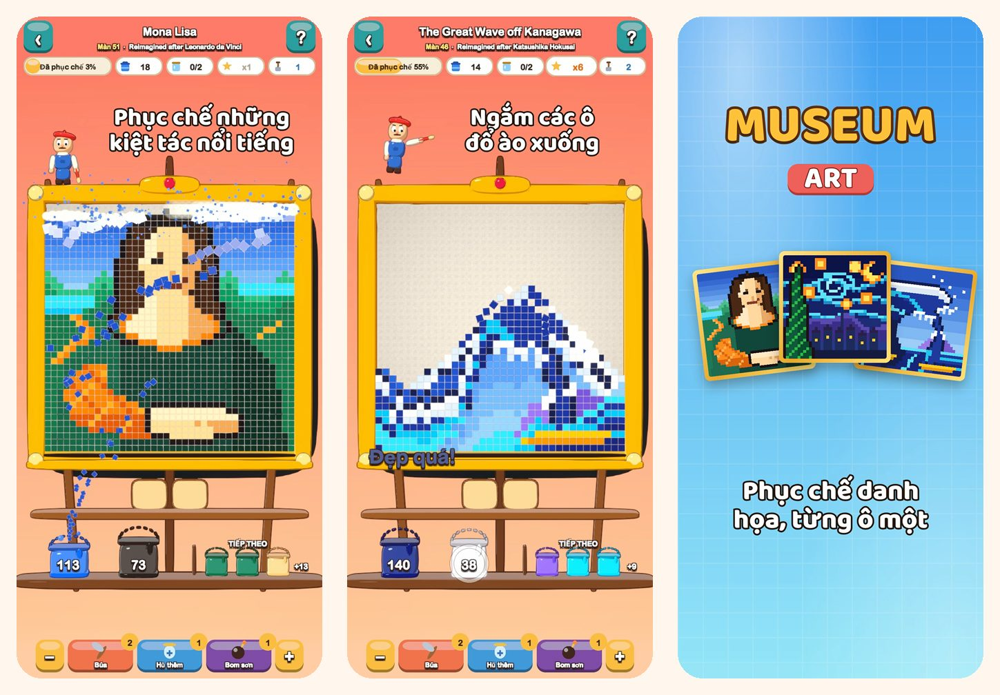

Museum Art
Giải đố màu tranh pixel
Chạm vào một màu và ngắm các ô đổ ào xuống. Phục chế 51 bức tranh pixel, từ nàng Mona Lisa đến Istanbul, Paris, Roma và New York.
Tải về trên App Store
Giới thiệu trò chơi
Mỗi bức tranh trong Museum Art được ghép từ những ô vuông đầy màu sắc. Lần lượt dọn từng màu và ngắm bức tranh rực rỡ trở lại.
CÁCH CHƠI
- Chạm vào vùng màu chạm hàng dưới cùng, hoặc chạm vào chiếc xô trên kệ: các ô sẽ bay vào xô cùng màu.
- Các ô phía trên trượt xuống như cát và mở ra nước đi mới.
- Chưa có xô cho màu đó? Hãy tạm để nó trong lọ trên khay chờ.
- Càng ít dùng khay, bạn càng nhận nhiều sao.
51 BỨC TRANH CHỜ PHỤC CHẾ
- Khởi đầu với những cảnh tươi sáng, dễ chơi: khinh khí cầu, thuyền buồm, chú mèo và ngọn hải đăng.
- Thiên nhiên: đỉnh núi phủ tuyết, hồ trên núi, hoa anh đào và sa mạc lúc hoàng hôn.
- Chuyến du lịch vòng quanh Istanbul, Paris, Roma và New York.
- Kho báu của các bậc thầy: The Great Wave, The Starry Night, Water Lilies, The Milkmaid, Impression, Sunrise và Mona Lisa, được vẽ lại theo phong cách pixel.
THƯ GIÃN VÀ CÔNG BẰNG
- Màn nào cũng giải được mà không cần vật phẩm hỗ trợ, và chơi lại luôn miễn phí.
- Vật phẩm hỗ trợ cho lúc khó: Búa, Lọ thêm và Bom sơn.
- Phóng to để xem chi tiết bất cứ lúc nào.
- Mỗi bức tranh đều kèm một điều thú vị.
- Chơi bằng 19 ngôn ngữ.